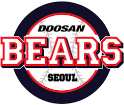

- 구단소개
- 선수단
- 구단 기록
두산베어스 팬클럽
두산베어스(Doosan Bears)는 대한민국 서울특별시를 연고지로 하는 KBO 소속 프로 야구단이다. KBO 한국시리즈에서 총 6회 우승(1982, 1995, 2001, 2015, 2016, 2019) 하였으며, 송파구 잠실동에 있는 서울종합운동장 야구장을 LG 트윈스와 함께 홈구장으로 사용한다.
두산베어스의 창단
1982년 1월 15일 한국 프로야구 제1호 구단이 창단했다. 대전·충청을 연고지로 한 OB 베어스가 6개 구단 중 가장 발 빠르게 창단식을 거행한 것이다. 일본 프로야구를 경험한 김영덕 감독, 김성근 투수코치, 이광환 타격코치로 한 코치진에 미국 마이너리그에서 활약한 박철순, 실업야구의 홈런왕 김우열, 윤동균 등 선수 25명으로 구성됐다.
박철순, 강철원, 박상열, 선우대영, 계형철, 김현홍, 황태환(이상 투수), 김경문, 조범현, 정종현, 김진홍(이상 포수), 신경식, 구천서, 이근식(大), 양세종, 유지훤, 김광수, 박종호(이상 내야수), 윤동균, 이홍범, 김유동, 정혁진, 이근식(小), 구재서, 김우열(이상 외야수)
애초 OB가 연고지로 희망한 곳은 서울이었지만 이미 MBC가 선점한 상황이었다. 이에 프로야구 산파역을 맡은 이용일, 이호헌 등은 대전·충청을 프랜차이즈로 시작해서 3년 후에 서울로 이전할 것을 제의했다.
“두산그룹 사주의 거주지가 종로구였고 선대도 경기도 광주였다. 대전, 충청도와는 전혀 연고가 없었다. 그래서 서울을 강력하게 희망했는데 MBC 청룡으로 결정된 상황이었다. 이에 3년 후 OB가 서울로 연고지를 이전한다는 것을 KBO와 MBC를 포함한 각 구단이 공증했고 실제로 그렇게 됐다. 이 과정을 모르는 이들은 OB가 충청도를 버리고 야반도주했다고 비난하지만 서울로의 연고지 이전은 예정된 것이었다.” 프로야구가 출범한 1981년 11월부터 1997년 12월까지 두산 프런트로 잔뼈가 굵은 구경백 일구회 사무총장의 얘기다.
[네이버 지식백과] OB-두산 베어스 - 프로야구 구단소개 (프로야구 구단 소개, 손윤)